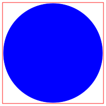

This package contains connectors and partial models:
| Name | Description |
|---|---|
| Connector flow port | |
|  FlowPort_a | Filled flow port (used upstream) |
| Hollow flow port (used downstream) | |
| AbsoluteSensor | Partial model of absolute sensor |
| RelativeSensorBase | Partial model of relative sensor without signal output |
| RelativeSensor | Partial model of relative sensor |
| FlowSensor | Partial model of flow sensor |